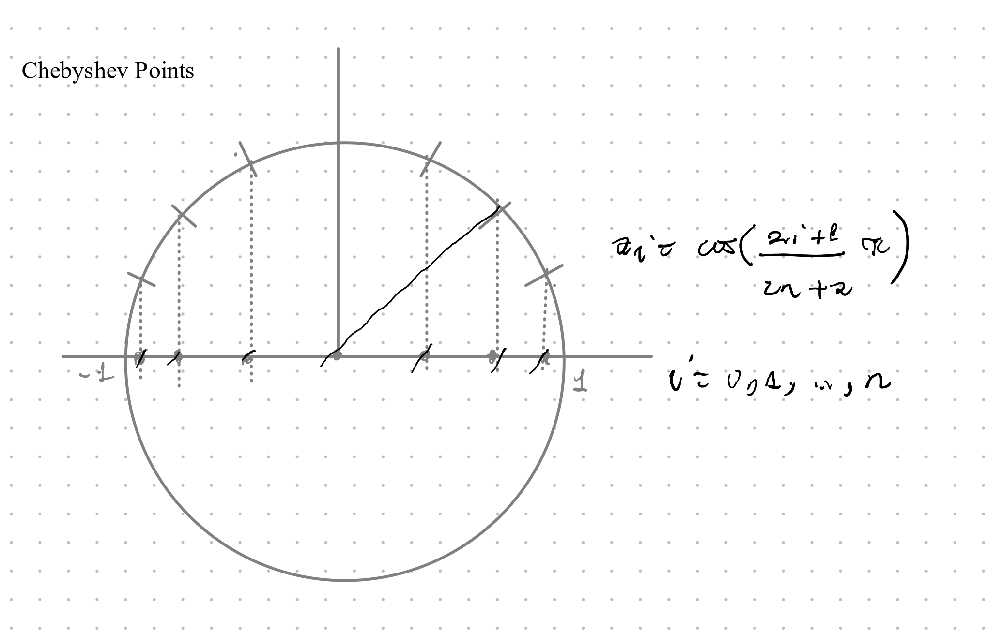

Num Weekly Summary
- W01/VL01
- date:
- summary:
- W01/VL02
- date:
- summary:
- W02/VL03
- date:
- summary:
- W02/VL04:
- date:
- summary:
- W03/VL05
- date: 31/10/2023, Tue
- summary: \(LR\)-Decomposition, uniqueness, existence, algorithm, complexity, error analysis
- Script pages: 21 (satz 2.5) - 28 (2.3 Error Analysis of LR)
- LR Zerlegung ist eindeutig
- Product of two triangular matrices is also triangular (left or right)
- Inverse of a triangular matrix is triangular (left or right)
- Product of two left-triangular matrices with \(a_{ii} = 1\) is also a left-triangular matrix with \(\tilde{a}_{ii} = 1\)
- \(LR\)-Decomposition method using Gauss decomposition (Alg 2.7) (?).
- Existence of the \(LR\)-decomposition (Satz 2.8)
- Practical version of \(LR\)-decomposition Algorithm (not Alg 2.7) saves space (Alg 2.9).
- Complexity of Alg 2.9 and solving a LSE (De: LGS)
- Error analysis of \(LR\)-Decomposition.
- W03/VL06
- date: 02/11/23, Thu
- summary: Script 28 - 33. Error estimation of Alg 2.9, forwards and backwards error, conditioning of a function, conditioning number.
- Error estimation of Alg 2.9 with proof (Lemma 2.13 & Satz 2.14)
- Aposteriori error estimation of Alg 2.9 (Satz 2.16)
- relationship between backwards and forwards error, a python example demonstrating that they aren’t necessarily related (?)
- Conditioning of a function (Ch 2.4.1).
- Conditioning number
- W04/VL07
- date: 07/11/23, Tue
- summary: Script 33 - 42.
- Question: How much effect does the error in \(A\) & \(b\) have on the solutuion of an LEQ/LGS?
- Conditioning of a matrix & its proof. (Prop 2.20)
- Error analysis of LEQ/LGS’s (Ch 2.4.3)
- Convergent Matrix sequences and matrix series (Ch 2.4.4.)
- Neumann Series (2.4.9, P:37)
- Spectral radius of a matrix
- Convergent Matrix sequences are used in the proof of error estimation of LEQ/LGS’s. Proof of 2.2.1
- Pivoting Strategies to increase \(LR\)-decomposition algorithm stability (Ch. 2.5) via exchanging rows during the steps of the algorithm.
- Permutation Matrix (Def 2.25)
- W04/VL08
- date: 09/11/23, Thu
- summary: Script 43 - 51
- note: numbering shifted 1 up, due to a new example
- Alg. 2.27: \(LR\)-Decomposition with column pivot search.
- Satz 2.30: \(\forall\) regular matrix \(A \in \mathbb{R}^{n\times n}\, \exists\) a Permutations matrix \(P_{\pi}\), s.t \(LR = P_{\pi}A\) and its proof.
- A problematic matrix for this method: Wilkinson matrix. Such problems can be avoided with “Full Pivot Search/Vollpivotsuche”.
- But fullpivot search has the disatvantageous complexity \(\mathcal{O}(n^3)\)
- Cholesky Decomposition: An efficient method for Symmetric Positive Definite (SPD) Matrices.
- Definition & Properties of SPD matrices. (Def 2.32 & Satz 2.33)
- Satz 3.34: \(A\in\mathbb{R}^{n\times n} \text{\, SPD \, }\Rightarrow \exists \text{\, upper triangular} \, R\in \mathbb{R}^{n\times n} \text{\, s.t.\, } A = R^TR\) (Cholesky decomposition)
- Proof of Satz 3.34
- Algorithm for Cholesky Decomposition (Alg 2.35) and its complexity (\(\frac{n^3}{3} + \mathcal{O}(n^2)\)). (2 times more efficient than usual decommposition)
- \(LR\)-Decomposition for Band-matrices
- Sparce matrices (schwach besetzte matrix) \(\approx\) many entries are 0.
- how sparce matrices are stored efficiently: For example
A = 0 5 0 C = (2, 3) {non-nul columns} 0 0 0 R = (1, 3) {non-null rows} 0 0 7 X = (5, 7) {actual entries in these coordinates}- Definition of a band matrix (Def 2.38)
- \(LR\)-decomposition for Band matrices.
- W05/VL09
- date: 14.11.23, Tue
- summary: Skript 51 - 55 (togehter with topics form appendix)
- Review of some LA topics (from Appendix):
- Def of orthogonal matrix
- Def of unitary matrix
- Lemma A.57/Satz A.58: Singular value decomposition (SVD) and its proof.
- Programming example demonstrating uses of SVD for image compression.
- Prop A.61 regarding SVD (?)
- Intro to new Ch 3 - Interpolation & Approximation
- Overview of different types of interpolating functions: polynomial, rational (polynomial), spline, neural network
- Intro Polynomial Interpolation:
- Def of vector space of polynomials of degree \(n\): \(\mathbb{P}_n\).
- Def 3.1: Lagrange Interpolation Polynomials
- Review of some LA topics (from Appendix):
- W05/VL10
- date: 16.11.23, Thu
- summary: Skript: 55 - 64
- Lagrange interpolation
- Lagrange polynomials \(\{l_i\}_{i=0\dots n}\) Form a basis for \(\mathbb{P}_n\) & its proof.
- General interpolation with a general basis \(\{b_i\}_{i=0\dots n}\) \(\Rightarrow\) Vandermonde Matrix. note: Vandermonde matrix for Lagrange Basis is simply the identity matrix. Vandermonde matrix is very badly conditioned for the monomial basis \(\{x^i\}_{i=0}^n\)
- Error analysis of Lagrange interpolation. Certain properties of the function that is to be interpolated determine the precision of the error analysis (like the smoothness of the function.) (Satz 3.6)
- Neville’s Schema
- Lagrange interpolation
- W06/VL11
- date: 21.11.23, Tue
- summary: Skript 64 - 71
- Newton Interpolation (Ch 3.5)
- Dividierende Differenzen
- Lemma 3.11 and its proof via induction.
- Intepolation error
- Hermite Interpolation
- (3.7 is skipped)
- 3.8 Conditioning and Approximation
- Weierstrass Theorem (3.25)
- Newton Interpolation (Ch 3.5)
- W06/VL12
- date: 23.11.23, Thu
- summary: Skript 71 - 81
- review of error of polynomial interpolation: Bsp 3.21, 3.22.
- Runge Phenomenon
- Weierstrass Theorem (3.25) and its relationship to polynomial interpolation.
- Error of the best approximation (Satz 3.26)
- Def 3.23: Lebesgue Constant \(\Lambda_n\)
- Conditioning of the interpolation, what happens when we interpolate \(f + \delta\) instead of \(f\)?
- If the function is only known to be continuous (but not necessarily differentiable), there is another measure for how strong a function “fluctuates”: Modulus of continuity (Stetigkeitsmodul) (Def 3.27)
- Jackson’s Theorem (3.28) given without proof.
- Corollary (3.29) - its proof.
- How to keep \(\Lambda_n\) small? \(\rightarrow\) Chebyshev Interpolation, Chebyshev Points
- Goal: find appropriate points \(\{x_i\}_{i=1\dots n}\) s.t. \(\Lambda_n\) is minimal.
- Definition of Chebyshev Points (Def 3.30): \(x_i^{(n + 1)} = \cos{(\frac{2i + 1}{2n + 2}\pi)}\) 
- Definition of Chebyshev Polynomials (Def 3.32)
- Lemma 3.33 - some properties of chebyshev polynomials
- W07/VL13
- date: 28.11.23
- summary: Skript 81 - 96 (some pages were skipped)
- Clenshaw-Curtis points
- Satz 3.34
- Proofs regarding Lebesgue Constats are skipped.
- Lemma 3.40:
- Skip until Spline Interpolation
- Spline Interpolation:
- Error of spline interpolation
- Cubic splines